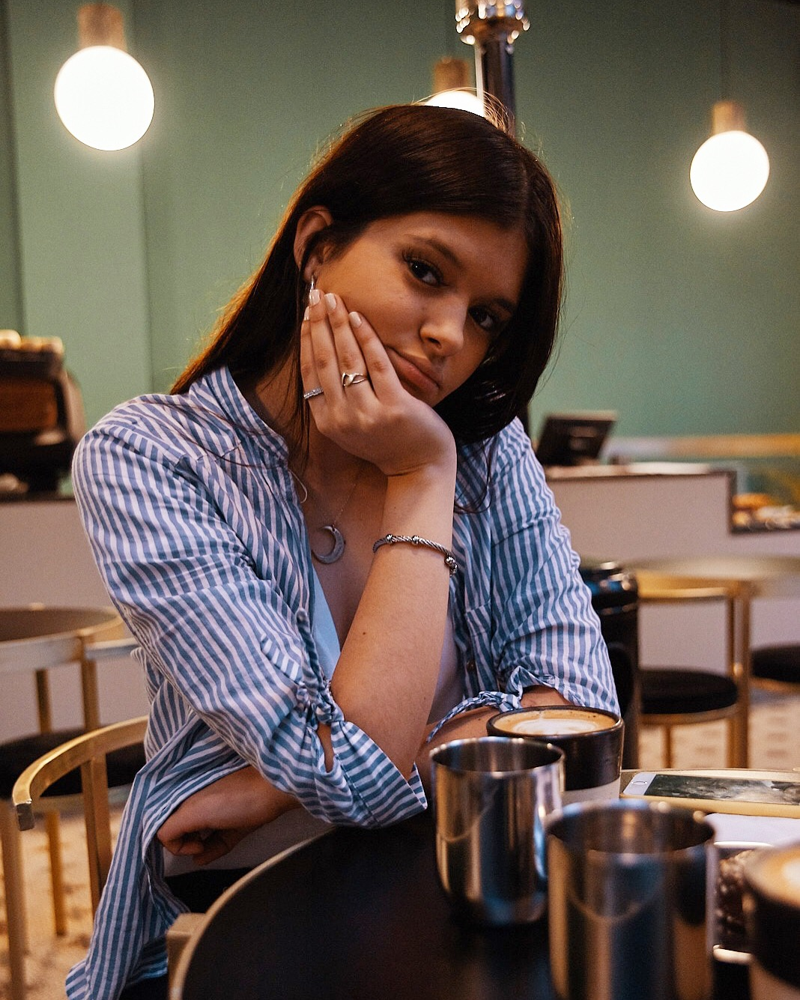

Soy una joven uruguaya de 25 años con formación en diseño gráfico y marketing digital. Me apasiona la creatividad y la comunicación visual, lo que me llevó a estudiar diseño gráfico y aprender sobre estrategias de marketing para promover marcas y productos.
Recientemente, he decidido ampliar mis habilidades y conocimientos adentrándome en el mundo de la programación. Estoy estudiando programación básica para comprender mejor cómo funcionan las tecnologías detrás de los sitios web y las aplicaciones.
Mi objetivo es combinar mis habilidades en diseño gráfico y marketing digital con la programación para crear experiencias en línea más completas y efectivas para las marcas con las que trabajo.
Estoy emocionada por el camino que he elegido y ansiosa por seguir aprendiendo y creciendo profesionalmente en estas áreas interconectadas.
Luana Amarante
Proyectos
Actualmente estoy disfrutando de mi pasantía en RESUR, la Red de Emprendimientos Sostenibles de Uruguay. Como diseñadora y traductora, contribuyo con mi trabajo creativo y habilidades lingüísticas. RESUR brinda oportunidades a personas privadas de libertad, apoya a diseñadoras comprometidas con la sostenibilidad y ayuda a pequeñas empresas de moda. Estoy emocionada de continuar aprendiendo y creciendo en este inspirador proyecto con un impacto positivo.
Habilidades
- Bilingüe
- Interpretación
- Comunicación visual
- Diseño
- Branding
- Creatividad
- Versatilidad
- Adaptabilidad